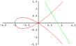

NASA Undergraduate Student Research Project (USRP)
Linear Algebra in Transparency (Maryland)
Linear Algebra at MIT
Matrix Animation in Educypedia

Theorem. Let \(A\) be invertible. Then the solution to \(A {\bf x}= {\bf b} \) is given by \( {\bf x}=A^{-1} {\bf b}\).
\( \begin{bmatrix} 1 & 1 \\ 0 &1 \end{bmatrix}^{2020}=\begin{bmatrix} 1 & 2020 \\ 0 & 1 \end{bmatrix} \) \(\qquad\qquad\qquad \begin{bmatrix} 1 & 2&0 \\ 0 & -1&0\\ 0& 0&1 \end{bmatrix}^{2019}=\begin{bmatrix} 1 & 2&0 \\ 0 & -1&0\\ 0 &0 &1\end{bmatrix} \)
Exponential of a matrix
\(e^A=X e^\Lambda X^{-1}\):
\begin{align*}
e^{\begin{bmatrix} 0 & 1 \\ 1 &0 \end{bmatrix}}=
\end{align*}
|  |
NASA Undergraduate Student Research Project (USRP) Linear Algebra in Transparency (Maryland) Linear Algebra at MIT Matrix Animation in Educypedia |
| Class schedule by chapters/sections (tentative) | |||
|---|---|---|---|
| I Systems of Linear Equations | 1.1 - 1.3 | ||
| II Matrices | 2.1 - 2.5 | ||
| Exam 1 | Chapters 1 and 2 | ||
| III Determinants | 3.1 - 3.5 | ||
| IV Vector Spaces | 4.1-4.7, 4.8* | ||
| Exam 2 | Chapters 3 and 4 | ||
| V* Inner Product Spaces | 5.1 - 5.4, 5.5* | ||
| VI* Linear Transformations | 6.1-6.4, 6.5* | ||
| VII Eigenvalues and Eigenvectors | 7.1-7.3, 7.4* | ||
| VIII**Complex Vector Spaces (online) | 8.1**-8.5** | ||
| Cumulative Final Exam | |||
| Review | Exam | Date |
|---|---|---|
| Review Exam I | Exam I | |
| Review Exam II | Exam II | |
| Review Exam III | Exam III | |
| Review Final | Final Exam |